| 見たい項目をクリックして下さい | |||||||||
|
| 会員からの投稿（詳細-２５） |
| 川 崎 大 師 薪 能 |
|
| 第３１回川崎大師薪能は、川崎市制８０周年記念として、大開帳奉修記念（赤札の年）の平成１６年５月２７日に、川崎大師平間寺境内で開催された。 幸いにも、さいかちの会会員の小野寺さんのご案内で、鑑賞することができた。 当日は、薪能法楽の後、演目は連吟「鶴亀」、舞囃子「高砂」と続き、「火入れ」で篝火が燈された後、狂言「口真似」、能「船弁慶」が演ぜられた。 午後７時４０分に、幽玄の世界は有終の美を迎えた。 参加者は、小野寺、小方、清水、須藤、坪井、牧、西田の７名 |
| 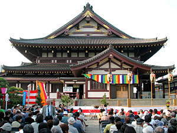 | Ａ | 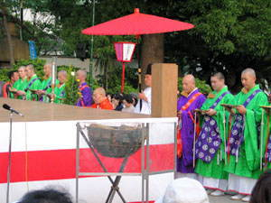 |
| 川崎大師の境内に設けられた能舞台の前は開演前から満席となった | 読経の中で、大導師高橋隆天川崎大師貫首による薪能法楽が始まった |
|
|
| Ａ | 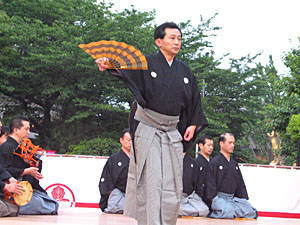 | |
| 新年を迎えた唐の都でのお話。「それ青陽の春になれば」で始まるこの謡曲は、「庭の砂は金銀の」、「鶴は千年」、「亀は万年」といったお目出度い言葉で歌い上げる。 | 肥後国阿蘇の神主友成が播磨国の高砂の浦で松を眺めていると、白髪の老夫婦が現れた。老夫婦は自分たちは高砂の松と住吉の松の精であり、離れたところに生えているが相生の松であるという。「高砂や、この浦船に帆をあげて」で始まるお目出度い謡曲。 |
|
|
| 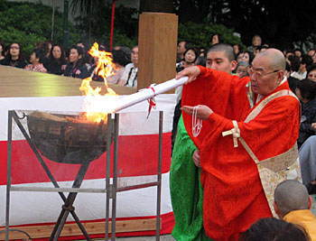 | Ａ | 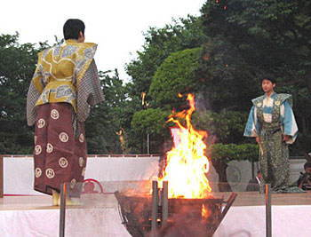 |
| 夕闇が訪れた６時１５分、読経の中で「火入れ」が行われた | 主人に酒の相手を捜して来いと言われた太郎冠者が男を連れ帰るが、主人が酒癖が悪い人をなぜ連れてきたと叱る。仕方ないので太郎冠者に、「主人の言う様、する様にせぃ」と命じる。太郎冠者は、本当に主人の言動通りに行動するとうい滑稽なお話。 |
| 能 船弁慶 |
| 今日の薪能の真打は、「船弁慶」。 時は源平合戦後の文治元年（１１８５年）、鎌倉の兄頼朝と不和になって都落ち、吉野から逃れて西国に下る義経に、静御前は舞を舞って別れを惜しむ。 摂津国大物の浦で静御前と別れた義経は、弁慶とともに船出するが、天候が急変し、海上に平知盛の幽霊（後シテ）が現れ、薙刀を振りかざし義経に切りかかる。 弁慶が数珠を取り出し祈ると、幽霊は消え失せた。 |
| 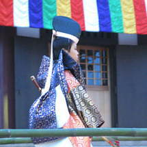 | Ａ | 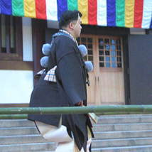 | Ａ | 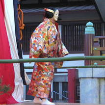 |
| 義経（子方・九郎判官）が登場 | 次は、武蔵坊弁慶（ワキ）が | 最後に、義経の愛妾静御前 （シテ）が登場 |
| 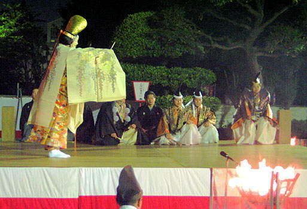 |
| 義経は都を離れ西国に行くため、ここで静御前と別れる。静御前は舞を舞って別れを惜しむ |
| 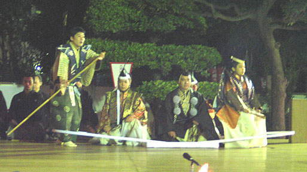 |
| 静御前と別れた義経は、弁慶と従者達を連れて尼崎の大物の浦から船に乗る。出航の時は好天気であったが、やがて武庫山（六甲山）に雲が現れ、不穏な天気になってきた。 |
| 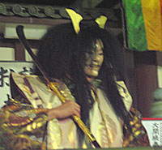 | Ａ | 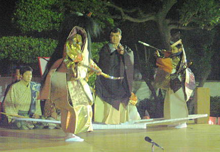 |
| 壇ノ浦で滅んだ平家一門の恨みを晴らそうと、平知盛の幽霊（後シテ）が現れ、薙刀を振りかざし義経に切りかかる。 | 「その時義経少しも騒がず---」、太刀を抜いて立ち向かう。そこへ弁慶が割って入り、幽霊に武器では敵わないと、数珠を取り出し祈ると、幽霊は消え失せ、後に白波が残るだけであった。ここは舞台のクライマックスであるが、今日の弁慶はチョット迫力が不足した。 |
| 小野寺会員のご案内で、素晴らしい薪能を鑑賞できて、感謝感激である。 次の機会には、ぜひ入場券を多数手に入れて頂いて、さいかちの会の公式行事とすることができれば、会の活動のレパートリがいっそう広がると思った次第である。 |
| 投稿の一覧表 に戻る |